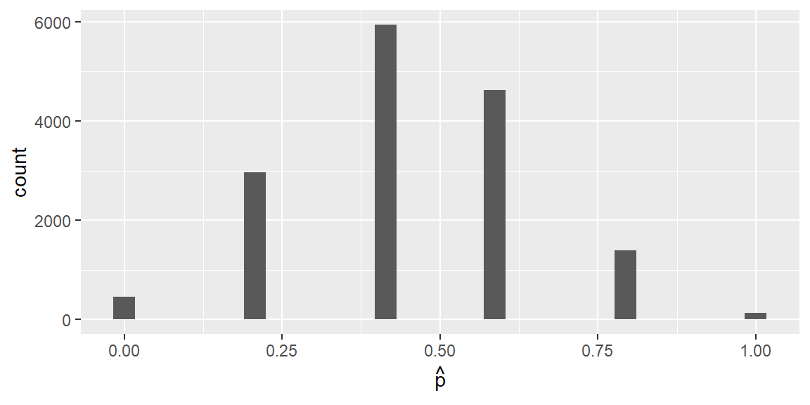
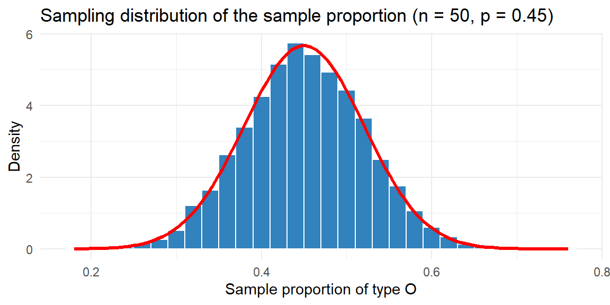
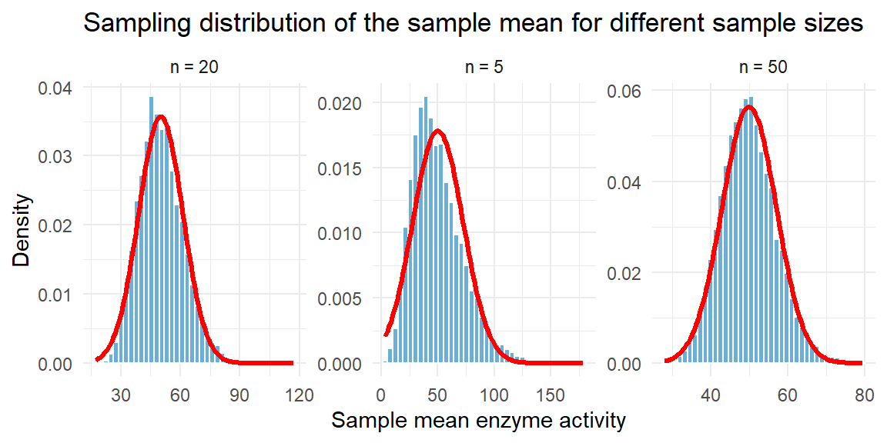
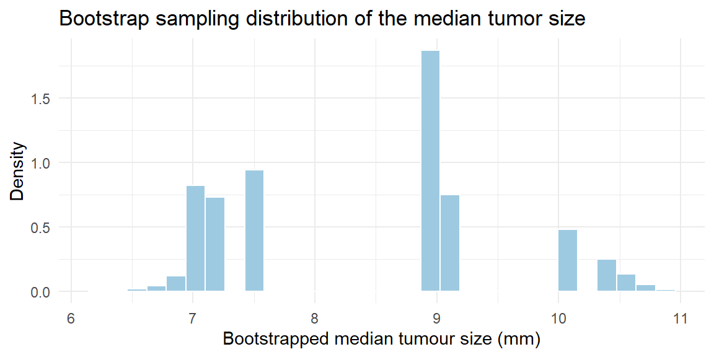

| L | L | R | R | L | L | L | L | R | L | R | L | L | R | R | R | R | R | R | R |
8 Sampling Distributions
8.1 Data, Probability and Sampling Distributions
“While nothing is more uncertain than a single life, nothing is more certain than the average duration of a thousand lives.” – Elizur Wright
Guiding question: What is a sampling distribution?
The leap from describing data to making decisions about unknown populations hinges on an understanding of sampling distributions. In the previous chapters we learned how to describe single samples and probability distributions. Now we turn our attention to what happens when we look at all possible samples and the statistics that come from them.
Before we can talk about sampling distributions we need to distinguish three different kinds of distributions you’ll encounter:
- The
data distribution is the distribution of the raw observations you collect in a single sample. For example, if you measure the blood pressures of 50 patients, the histogram of those 50 numbers is your data distribution. - A
probability distribution is the theoretical model you assume for a population. The probability distribution describes how each individual in the population varies. - The
sampling distribution is the distribution of a statistic (for example the mean, median or proportion) computed from all possible samples of a fixed size. It is a theoretical idea rather than something we observe directly. The sampling distribution of a statistic is the distribution of all possible values taken by that statistic when all possible samples of size \(n\) are taken from the population. Put another way, the sampling distribution is the probability distribution of that statistic.
The difference between data, probability and sampling distributions can be subtle at first, so let’s unpack them with an example from biology. Imagine an ecologist studying the length of salamanders in a certain swamp. The probability distribution for salamander length might be right‑skewed because most animals are small but a few grow unusually long. The data distribution is what the ecologist actually observes when she randomly captures, measures and releases 20 salamanders. If she were to repeat that 20‑animal study many times, computing the sample mean length each time, the histogram of those means would form the sampling distribution of the sample mean.
Statistics versus parameters
It helps to recall the distinction between
Sampling distribution from a small population
Suppose we had a small population of 20 US adults. Furthermore, suppose we want to estimate the proportion of this population that are left eye dominate. Below are the values for this population1
Our goal is to estimate the proportion of this population who are left eye dominate. Clearly, we could easily determine this proportion by looking at this small population. By doing so, we see that the proportion that are left eye dominate is \[ \begin{align*} p =& \frac{9}{20}\\ =&0.45 \end{align*} \] Suppose we don’t know this proportion and the only thing we can do is randomly sample of size of 5 from this population. Below is one such sample.
| L | R | R | L | R |
From this sample, we estimate the proportion to be \[ \begin{align*} \hat{p} =& \frac{2}{5}\\ = & 0.4 \end{align*} \]
This is just one such sample. There are many more random samples of size 5 from this population of 20 that I could have gotten. In fact, there are \[ \binom{20}{5} = 15{,}504 \] possible samples of size 5 from this population. Suppose we did all of these samples and each time calculated \(\hat{p}\). Below is a histogram of all of these \(\hat{p}\)’s.

The histogram above shows the sampling distribution of \(\hat{p}\) for a sample of size 5 from a population of size 20. For most practical applications, the population is much bigger than 20. It is not uncommon to have population sizes in the tens of thousands or even millions. Even if we kept the population size relatively low, such as 1000, the number of possible samples of size 5 become massive. \[ \begin{align*} \binom{1000}{5} = 8{,}250{,}291{,}250{,}200 \end{align*} \]
Even if we wanted to examine all of the possible samples (if the population was known) of size 5, it would be unfeasible even with a computer.
Fortunately, we have some results to help us determine what these distributions look like without having to examine all of the possible samples.
Working in JMP Pro 17
JMP can simulate sampling distributions without requiring you to know R. To explore the sampling distribution of a mean:
- Use Help → Sample Data Library to load a dataset (for example, “Body Measurements”). Then choose Analyze → Distribution and assign your variable to Y to visualize the data distribution.
- To simulate a sampling distribution, go to Graph Builder and use Bootstrap from the red triangle menu. Specify your statistic (mean, median or proportion) and the number of bootstrap samples. JMP will draw many samples with replacement from your data and display the distribution of the chosen statistic. This bootstrap distribution approximates the sampling distribution we would get by taking many independent samples from the population.
Recap
| Keyword | Definition |
|---|---|
| Data distribution | The distribution of the observed values in a single sample. |
| Probability distribution | A theoretical model describing how a variable behaves in the population. |
| Sampling distribution | The probability distribution of a statistic computed from all possible samples of a fixed size. |
Check your understanding
- Explain, in your own words, the difference between a data distribution and a sampling distribution. Why is the latter crucial for inference?
- What is the meaning of the phrase “the sampling distribution is a theoretical idea—we do not actually build it”?
Solutions
Data vs. sampling distribution. A data distribution reflects the raw measurements from one sample. A sampling distribution reflects how a summary statistic (such as a mean or proportion) would vary if we repeatedly took new samples of the same size. The sampling distribution is crucial because it tells us how much our statistic is expected to fluctuate around the true parameter, and thus forms the basis for standard errors and confidence intervals.
Why theoretical? The number of possible samples of size \(n\) from a population is enormous, so we cannot literally take all of them. The sampling distribution therefore exists as a theoretical construct.
8.2 Sampling Distribution of the Sample Proportion
“Math is the logic of certainty; statistics is the logic of uncertainty.” - Joe Blizstein
Guiding question: How do we estimate the accuracy of our sample results?
Many biological and medical studies involve categorical outcomes: the presence or absence of a gene mutation, success or failure of a treatment, or whether a patient exhibits a symptom. In these settings a common statistic is the sample proportion, denoted \(\hat{p}\), which estimates the population proportion \(p\). The sampling distribution of \(\hat{p}\) describes how that proportion varies across repeated random samples of the same size.
Properties of the sampling distribution
When the outcomes in the population are independent and the population proportion is \(p\), the sampling distribution of \(\hat{p}\) has two key properties:
Center . The mean (or expected value) of \(\hat{p}\) is the true population proportion. In other words, \(E(\hat{p}) = p\).
Spread . The standard deviation of \(\hat{p}\) is \[ \sigma_{\hat{p}} = \sqrt{\frac{p(1-p)}{n}} \]This formula arises because the variance of a binomial random variable with parameters \(n\) and \(p\) is \(np(1-p)\), and dividing by \(n^2\) converts the count to a proportion. The standard deviation shrinks as the sample size increases, meaning larger samples give more precise estimates.
Shape . Under mild conditions (in particular, when the expected numbers of successes and failures both exceed about 15), the sampling distribution of \(\hat{p}\) is approximately normal. Thus, for large enough \(n\) we can use a Normal model to approximate probabilities involving \(\hat{p}\).
Example: prevalence of blood type O
Consider a large population of blood donors in which the true proportion with type O blood is 45%. Suppose we randomly sample \(n=50\) donors and record whether each has type O blood. The sample proportion of type O donors is \(\hat{p} = x/n\), where \(x\) is the number of type O donors. Because \(x\) follows a binomial distribution with parameters \((n,p) = (50,0.45)\), we know that \[ E(\hat{p}) = 0.45 \] and \[ \sigma_{\hat{p}} = \sqrt{0.45\times 0.55/50} \approx 0.070 \]
To see the sampling distribution in action, we can simulate many samples and plot their proportions. Below is a histogram of \(\hat{p}\) for 10,000 samples.

The histogram of the simulated proportions (blue bars) lines up closely with the red Normal curve predicted by the theory. Most sample proportions fall within roughly two standard errors (about ±0.14) of the true proportion 0.45.
Conditions for the normal approximation
The rule of thumb for using the Normal approximation to \(\hat{p}\) is that both \(np\) and \(n(1-p)\) should be at least 15. This ensures there are enough successes and failures for the normal curve to be close. When this condition is not met, the sampling distribution can be noticeably skewed, and exact binomial calculations or bootstrap methods (Section 8.4) are preferable.
Working in JMP Pro 17
To explore sampling distributions for proportions in JMP:
- Use Analyze → Distribution on a binary variable (coded 1 for success and 0 for failure) to see the data distribution.
- Use Graph Builder with the Bootstrap option to resample your data with replacement. Specify the statistic as proportion of successes and the number of bootstrap samples. JMP will display the bootstrap distribution, which closely approximates the theoretical sampling distribution when the sample is random and unbiased.
Recap
| Keyword | Definition |
|---|---|
| Population proportion \(p\) | The true fraction of individuals in the population with a certain characteristic. |
| Sample proportion \(\hat{p}\) | The fraction of sampled individuals with the characteristic; an estimator of \(p\). |
| Expected value of \(\hat{p}\) | The expected value of the sampling distribution of \(\hat{p}\), equal to \(p\). |
| Standard deviation of \(\hat{p}\) | The standard deviation of the sampling distribution of \(\hat{p}\), equal to \(\sqrt{p(1-p)/n}\). |
| Normal approximation | For large \(n\) with \(np\ge15\) and \(n(1-p)\ge15\), the sampling distribution of \(\hat{p}\) is approximately normal. |
Check your understanding
- Explain why the sampling distribution of \(\hat{p}\) has mean equal to the population proportion. What would it mean if the mean of \(\hat{p}\) were systematically above or below \(p\)?
- Suppose the true prevalence of a rare mutation is 1%. If you sample \(n=100\) individuals, will the sampling distribution of \(\hat{p}\) be well approximated by a Normal distribution? Why or why not? How might you proceed instead?
Solutions
Unbiasedness. If we took infinitely many random samples and averaged the sample proportions, we would recover the true population proportion. That is precisely what the expected value of \(\hat{p}\) tells us: \(E(\hat{p})=p\). If the mean of \(\hat{p}\) were consistently above \(p\), our estimator would be biased, systematically overestimating the true proportion.
Rare mutation. When \(p\) is very small (0.01) and \(n=100\), the expected number of successes is \(np=1\) and the expected number of failures is 99. Because \(np<15\), the sampling distribution of \(\hat{p}\) is highly skewed and the normal approximation is poor. A better approach is to use the exact binomial distribution to compute probabilities or to use a bootstrap to approximate the sampling distribution (see Section 8.4).
8.3 Sampling Distribution of the Sample Mean
“The Scientist must set in order. Science is built up with facts, as a house is with stones. But a collection of facts is no more a science than a heap of stones is a house.” - Henri Poincare
Guiding question: How does the Central Limit Theorem make statistics possible?
The sample mean \(\bar{x}\) is the workhorse of quantitative inference. When we measure a quantitative trait—blood pressure, cholesterol level, enzyme activity—we often summarize it with an average. To use \(\bar{x}\) for inference we must understand its sampling distribution. Under mild conditions, the sampling distribution of \(\bar{x}\) has remarkable properties.
Mean and standard deviation
If the population has mean \(\mu\) and standard deviation \(\sigma\), and we take random samples of size \(n\), then the sampling distribution of the sample mean has
Mean : \(E(\bar{x}) = \mu\). There is no systematic tendency for the sample mean to over‑ or under‑estimate the population mean.Standard Deviation : \(\sigma_{\bar{x}} = \sigma/\sqrt{n}\). Averages are less variable than individual observations because the variation is reduced by the factor \(\sqrt{n}\). Bigger samples give more stable means.
These facts do not require any particular distribution for the population; they follow from basic properties of expected value and variance. However, the shape of the sampling distribution does depend on the population distribution. If the population is normal, then the shape will be normal. But what if the population is not normal or the shape is unknown?
The Central Limit Theorem
The
The beauty of the CLT is that it does not require the underlying population to be normal; even strongly skewed or irregular distributions yield approximately normal sample means when \(n\) is large enough.
Illustration with simulated enzyme activities
Enzyme activity measurements often follow a skewed distribution because they cannot be negative but can have long right tails. Suppose the true activity in a population of cells follows an exponential distribution. We take repeated random samples of different sizes and compute the sample mean for each. The following plot shows 10,000 simulated sample means for \(n=5\), \(n=20\) and \(n=50\) to illustrate how the distribution of \(\bar{x}\) evolves:

The three panels show that for very small samples (\(n=5\)) the sampling distribution of \(\bar{x}\) still retains some skewness. For moderate samples (\(n=20\)) the distribution looks more bell‑shaped, and by \(n=50\) it is nearly indistinguishable from the Normal curve (red line). This behavior is exactly what the CLT predicts.
Practical considerations
The CLT justifies using normal‑based methods for many statistics, but it is not a panacea. Large samples are not always attainable. Sometimes cost, difficulty or the preciousness of biological material limits the sample size. In such cases the sampling distribution of \(\bar{x}\) may be far from normal, especially for very skewed or heavy‑tailed populations. Diagnostic plots and simulation can help you gauge whether normal approximations are reasonable.
If the data is not available, then the rule-of-thumb of \(n\ge 30\) is adequate in most situations to determine if the sample size is large enough.
Working in JMP Pro 17
To explore the sampling distribution of the mean in JMP:
- Use Analyze → Distribution to visualise your quantitative data and estimate the population standard deviation.
- Choose Analyze → Resampling and select Bootstrap. Specify the statistic as the mean and set the number of resamples. JMP will generate a bootstrap sampling distribution of \(\bar{x}\), plot it and report the standard error. You can compare the bootstrap distribution to a Normal distribution with mean equal to the observed \(\bar{x}\) and standard deviation equal to the bootstrap standard error.
Recap
| Keyword | Definition |
|---|---|
| Standard deviation of \(\bar{x}\) | The standard deviation of the sampling distribution of \(\bar{x}\), equal to \(\sigma/\sqrt{n}\). |
| Central Limit Theorem (CLT) | States that for large \(n\), the sampling distribution of the sample mean is approximately normal with mean \(\mu\) and standard deviation \(\sigma/\sqrt{n}\). |
Check your understanding
- A laboratory measures the enzyme activity of 10 randomly selected yeast cultures. The population distribution is known to be highly skewed with mean 50 units and standard deviation 20 units. Without doing any calculations, would you expect the sample mean to follow a Normal distribution? Explain your reasoning.
- A nutritionist samples 64 adults and measures their daily vitamin D intake. The population mean intake is 600 IU with standard deviation 200 IU. What is the mean and standard deviation of the sampling distribution of \(\bar{x}\)? If the intake distribution is skewed, is the Normal approximation still reasonable? Why or why not?
Solutions
Small, skewed samples. With a sample size of 10 and a highly skewed population, the sampling distribution of \(\bar{x}\) will retain noticeable skewness. The Central Limit Theorem requires larger \(n\) before the distribution of the sample mean becomes approximately normal, so caution is warranted when applying Normal approximations.
Vitamin D intake. The sampling distribution has mean \(\mu = 600\) and standard deviation \(200/\sqrt{64} = 25\). Because \(n=64\) is reasonably large, the CLT suggests that the sample mean will be approximately normal even if the individual intakes are skewed. Therefore the Normal approximation should be adequate.
8.4 Bootstrap Sampling Distribution
“It is the mark of a truly intelligent person to be moved by statistics.” -George Bernard Shaw
Guiding question: How to determine the sampling distribution with just the data?
Sometimes we cannot rely on formulas or the Central Limit Theorem to determine the sampling distribution. Maybe the statistic has a complicated distribution (like a median or a trimmed mean) or the sample size is too small for the normal approximation. In these cases we can use bootstrapping to approximate the sampling distribution directly from the data.
What is bootstrapping?
Bootstrapping is a
- Treat your observed sample of size \(n\) as a stand‑in for the population.
- Draw a bootstrap sample of size \(n\) with replacement from the original data. Sampling with replacement means some observations may be selected multiple times while others may not appear at all.
- Compute the statistic of interest (mean, median, proportion, difference, etc.) on the bootstrap sample. This value is a bootstrap statistic.
- Repeat steps 2 and 3 many times (often thousands). The histogram of the bootstrap statistics forms the
bootstrap distribution or bootstrap sampling distribution.
Bootstrapping gives us an empirical approximation to the true sampling distribution without making strong assumptions about the population. It is particularly useful for complex statistics, skewed data or small samples.
Example: median tumor size
Imagine a study measuring the diameters (in millimeters) of 25 tumors detected in a mammogram screening. The sample is small and the data are skewed; we want to estimate the sampling distribution of the median tumor size. A bootstrap approach provides the following:

The histogram shows the bootstrap distribution of the median tumor size. From this distribution we can compute a bootstrap standard deviation (the standard deviation of the bootstrap medians) and make inferences.
When to bootstrap
Bootstrapping is most useful when:
- The sample size is small and the Central Limit Theorem may not hold.
- The statistic has a complicated or unknown sampling distribution (medians, percentiles, regression coefficients, etc.).
- You want to assess the uncertainty of a statistic without strong parametric assumptions.
Working in JMP Pro 17
JMP has built‑in bootstrap tools that make resampling easy:
- After running an analysis (for example Analyze → Fit Y by X for comparing two groups), click the red triangle menu (▸) and select Bootstrap. Choose the statistic you wish to bootstrap and the number of resamples. JMP will create a bootstrap distribution, display it and report standard errors and confidence intervals.
- For custom statistics, use Tables → Bootstrap Data to generate bootstrap samples from your dataset. You can then analyse each bootstrap sample using your preferred platform and collect the statistic of interest.
Recap
| Keyword | Definition |
|---|---|
| Bootstrapping | A resampling method that uses the observed data to approximate a sampling distribution by repeatedly sampling with replacement. |
| Bootstrap sample | A sample of size \(n\) drawn with replacement from the original sample. |
| Bootstrap statistic | The value of the statistic computed on a bootstrap sample. |
| Bootstrap distribution | The distribution of many bootstrap statistics; an empirical approximation to the sampling distribution. |
Check your understanding
- Why do we sample with replacement when constructing a bootstrap sample? What would go wrong if we sampled without replacement?
- Compare and contrast the bootstrap distribution with the theoretical sampling distribution. Under what circumstances do they coincide, and when might they differ?
Solutions
Replacement is essential. Sampling with replacement allows each observation to appear multiple times—or not at all—in a bootstrap sample. This mimics the variability of drawing new samples from the population. Sampling without replacement would simply rearrange the data and fail to capture the variability inherent in new samples.
Bootstrap vs. theoretical. The bootstrap distribution approximates the theoretical sampling distribution when the sample is random and representative, and when the number of bootstrap resamples is large. For statistics with simple known sampling distributions (like means and proportions), the bootstrap will agree closely with theory. For statistics whose sampling distributions are complicated or unknown, the bootstrap provides a practical alternative but may differ from the true sampling distribution, especially when the sample size is very small or the sample is biased.
Data was obtained from Introductory Statistical Methods classes. Here, we are treating these values as a population.↩︎